结论：探低回升但创新低，底背驰仍不能判定，轻仓等待。 上午上证低开 3583.12 探至 3547.94（破 11/18 低 3560.45，创 60 日新低）后拉回 3571.99（-0.44%）； 3623 门槛未到（今日最高 3583.12，差 40.00 点）→ 走势只能界定为震荡，不给阶段低点判断。 跌家数 4592（82%）、涨停 20 家，11 只标的无方法买点。 ⚠ 原文日期存疑：「3623」「昨日二类热点」「明早英伟达」「半导体领涨」四条对不上 11/19 实际，见偏差记录。
三个判据逐条核：① 「低开后探底回升、上证盘中创出短期新低」 —— 开 3583.12（开盘即全天最高）→ 探 3547.94 → 收 3571.99，破 11/18 的 3560.45，创 60 日新低 ✓；② 「观察昨日上午高点 3623 能否翻过去」 —— 今日最高 3583.12，差 40.00 点，未满足（11/18 上午高点实为 3596.55，见偏差记录）；③ 3750 差 178.01 点，更远。按老师自己的推演：创新低后马上被拉回不属于底背驰，走势只能界定为震荡、先看成短期低点，不给阶段低点判断。
风险点照抄：「在前低点附近做 2-3 天的弱势震荡，这种震荡属于没有止跌的表现」。结构上是权重拖累、宽度极差 —— 全 A 5579 只跌 4592 只（82%）、跌超 5% 306 家；11:30 两市 7,859 亿 vs 昨日同时点 7,928 亿（-0.87%）。科创50 +0.98% 逆势红只是权重集中，创业板 -0.63%、深成 -0.51%、沪深300 -0.49% 同步走弱。
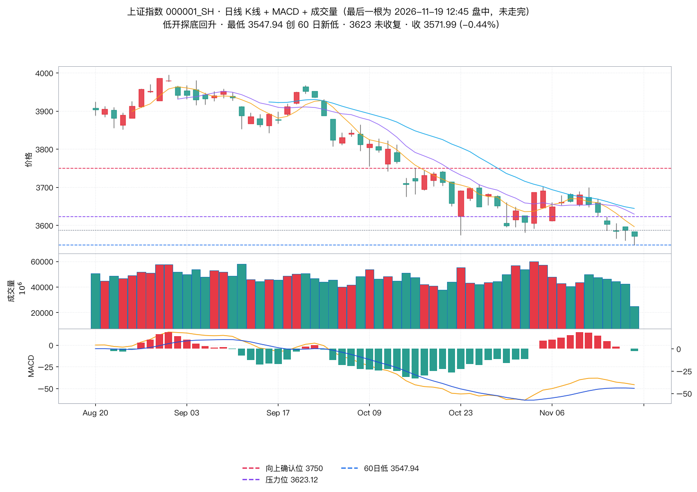
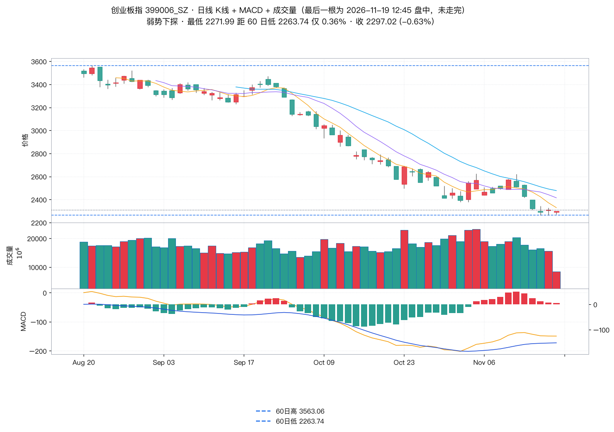
| 方向（自建篮子） | 老师口径 | 实测（均值 · 涨跌家数 · 个股） |
|---|---|---|
| 半导体 | 老师：今天领涨，按弱势看待 | -1.63%（2 涨 4 跌），内部撕裂：中芯国际 +5.47%、北方华创 +2.25%；海光信息 -13.03%、瑞芯微 -1.92%、寒武纪 -1.63%、兆易 -0.94% |
| AI视频/传媒 | 老师：跌破支撑，大概率不行 | -2.92%，0 涨 7 跌；掌阅科技 -4.24%、上海电影 -4.25%、捷成股份 -2.79%、昆仑万维 -2.57%、中文在线 -1.98%、华策影视 -1.84% |
| 人形机器人 | 老师：机器人已走弱 | +0.17%（4 涨 5 跌），内部反而有分化：拓普集团 +4.26%、兆威机电 +2.13%、三花智控 +1.49%；模塑科技 -3.32%、鸣志电器 -1.30%、长盈精密 -1.66% |
| 算力/CPO | 老师：强势股仍在洗牌 | +0.31%（3 涨 2 跌）；新易盛 +2.19%、沪电 +0.90%、中际旭创 +0.87%，工业富联 -1.21%、胜宏科技 -1.22% |
| 银行 | 老师：防御品种温和上扬 | -0.27%（2 涨 3 跌）；招商银行 +0.07%、兴业银行 +0.15%，农业银行 -0.92%、建设银行 -0.32% |
| 电力/高股息 | 同上 | +0.05%（2 涨 3 跌）；华能水电 +0.89%、国投电力 +0.25%，中国核电 -0.81% |
| 饮料制造 | 同上 | +0.76%（4 涨 1 跌）；东鹏饮料 +1.58%、欢乐家 +1.44%、养元饮品 +1.11% |
| 家电 | 同上 | +0.65%（4 涨 0 跌）；海尔智家 +1.24%、海信视像 +1.10%、美的 +0.53%、格力 +0.37% |
| 煤炭/石油 | 同上 | -1.16%（0 涨 5 跌）；中国石化 -1.34%、中国石油 -1.27%、中国海油 -1.60%、中国神华 -0.41% |
三条要记的：① 「传媒大概率不行」成立 —— AI视频/传媒 -2.92%（0 涨 7 跌），昨日二类热点直接塌方；② 「今天领涨的是半导体」不成立 —— 半导体篮子 -1.63%（2 涨 4 跌），海光信息 -13.03% 拖累，中芯国际 +5.47%、北方华创 +2.25% 独强，是内部撕裂而非领涨；新浪行业榜涨幅榜首仅陶瓷行业 +0.72%，全市场无行业涨超 1%；③ 「防御品种温和上扬」部分成立 —— 饮料制造 +0.76%（4 涨 1 跌）、家电 +0.65%（4 涨 0 跌）、电力 +0.05%，但煤炭/石油 -1.16%（0 涨 5 跌）、银行 -0.27%，红利不是全面抱团；人形机器人 +0.17% 也谈不上「已经走弱」。
| 标的 / 题材 | 现价 | 老师定性（老师口径） | 关键位 | 实测印证（日线触达） | 动作 |
|---|---|---|---|---|---|
| 药明康德 | 143.45 (-0.46%) | 不操作 · 等突破 157.8 出 15 分钟底分型三买；或日线有力度底分型（谨慎） | 157.8 | 143.45 -0.46%，低 140.87，最高 144.37，距 157.8 差 13.43 元；「走势非常抗跌」未兑现 | 等 |
| 中国船舶 | 34.56 (-0.43%) | 不操作 · 走势没止跌 | — | 低 33.98；未止跌成立 | 等 |
| 瑞芯微 | 193.78 (-1.92%) | 激进思路 · 等日线有力度底分型后过第三根 K 线高点 | 208 | 低 187.87 破 11/18 低 192.76，仍远低于 208 与 220.7；盘中异动不能判止跌，底分型未出 | 等 |
| 伊利股份 | 32.75 (+1.11%) | 不操作 · 前期已说不要追涨；持仓者看小级别顶背驰 | — | 最高 32.97 续创 60 日新高，收 32.75 +1.11%；位置更高，不追仍成立 | 不追 |
| 中文在线 | 22.80 (-1.98%) | 不操作 · 等过高点 30.38 后的三买 | 30.38 | 低 22.51 破 11/18 低 22.85，距 30.38 差 7.03 元 | 等 |
| 海天瑞声 | 89.00 (-2.51%) | 不操作 · 破位迹象，先观察能否修复 | 141 | 低 86.50 再破前低（11/18 低 89.80），破位加重；距 60 日低 76.54 还有 11.6% | 等 |
| 奥普特 | 129.03 (-0.79%) | 不操作 · 破位迹象，先观察修复 | 140 | 低 126.64 破前低（11/18 低 127.65）；距 140 门槛差 7.90 元 | 等 |
| 柯力传感 | 46.80 (-1.18%) | 不操作 · 等日线有力度底分型后再评估 | 53 | 低 45.75 破前低（11/18 低 46.90），远低于 53 支撑；底分型未出 | 等 |
| 兆易创新 | 217.50 (-0.94%) | 无操作 · ①等日线底分型 ②收复站稳 233，防构建新中枢延续 | 233 | 探低 212.59 后回升，最高 217.78，距 233 差 15.22 元；底背驰未成立 | 等 |
| 模塑科技 | 13.98 (-3.32%) | 不操作 · 等日线有力度底分型；提示英伟达业绩风险 | 14.95 | 低 13.79 创新低并破 14.95（11/18 低 14.27），收 13.98 -3.32%；「走势抗跌」不成立 | 等 |
| 长盈精密 | 23.11 (-1.66%) | 不操作 · 走势没有止跌 | — | 低 22.53 破 11/18 低 22.89；未止跌成立 | 等 |
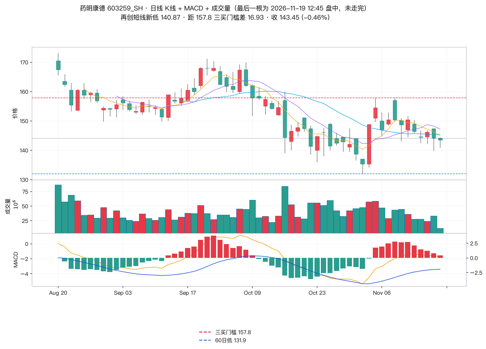
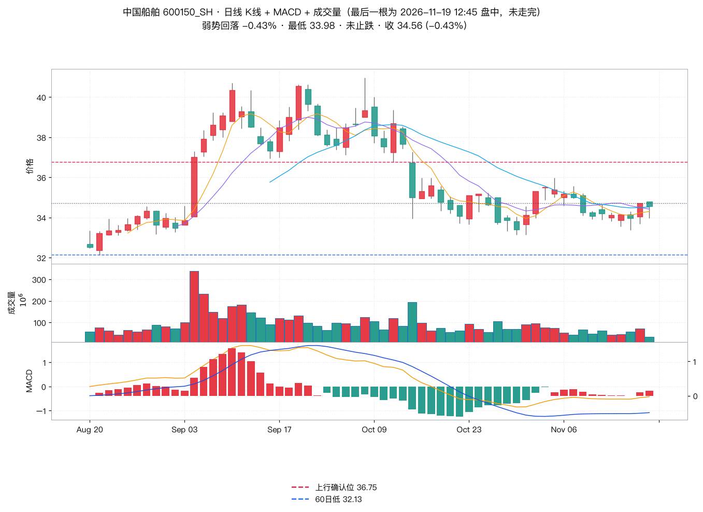
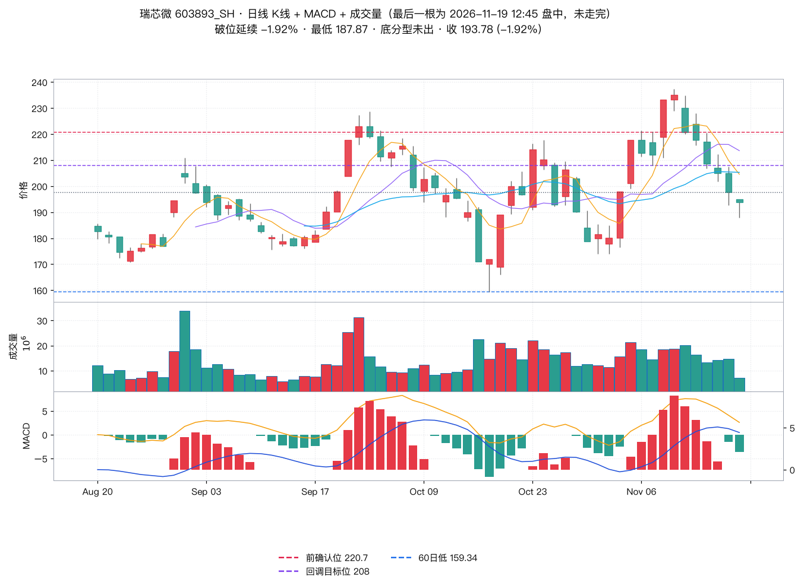
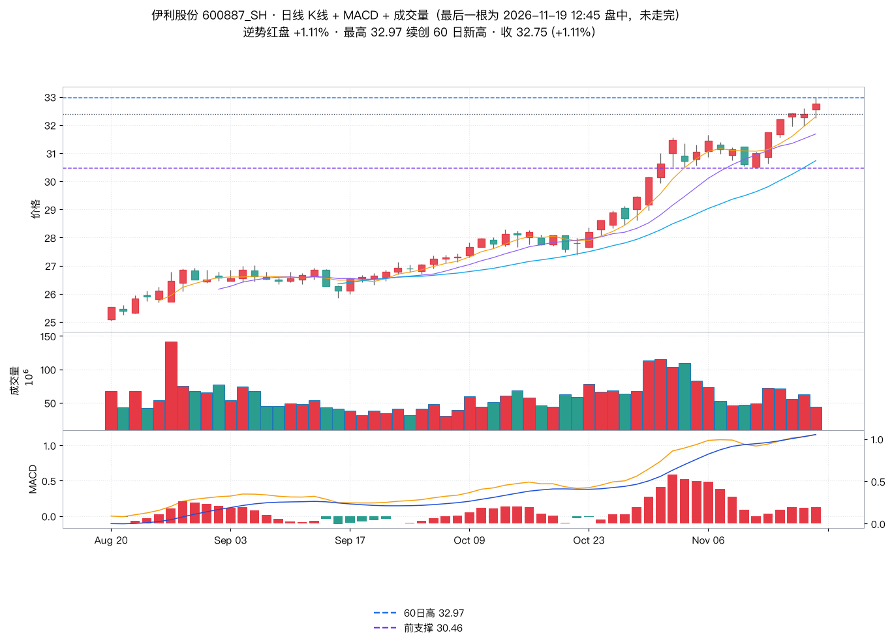
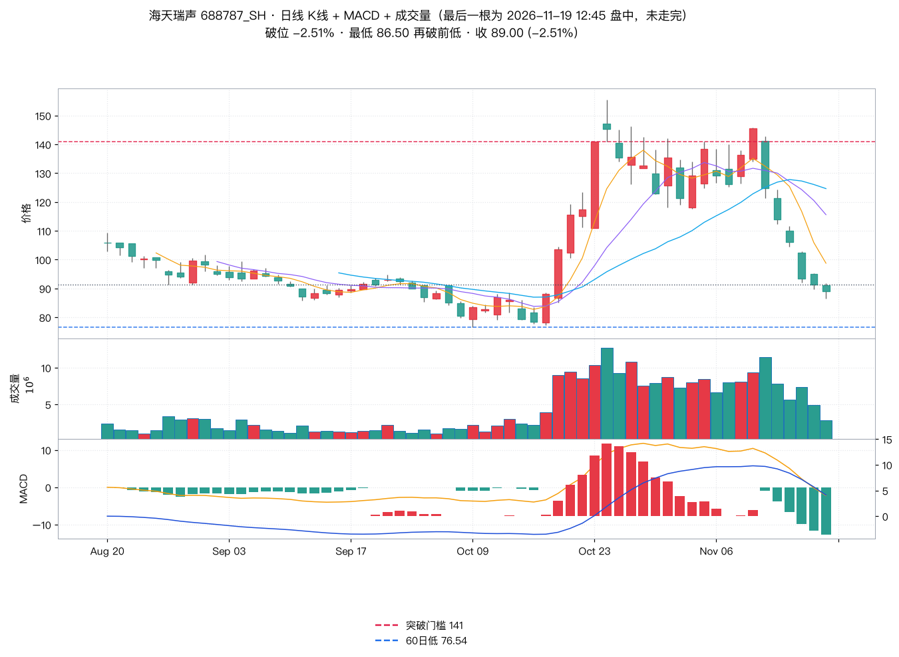
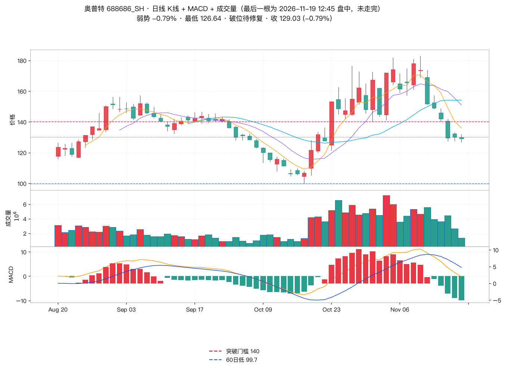
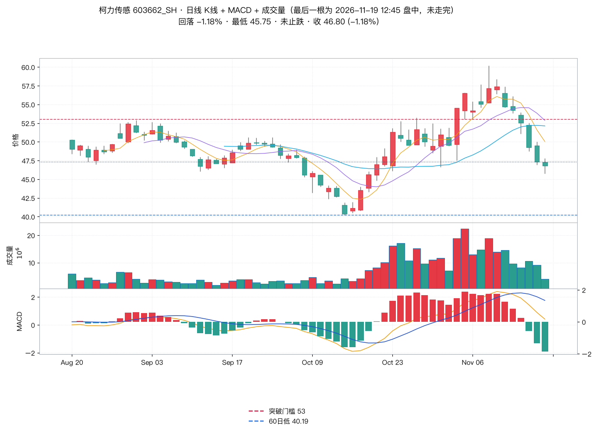
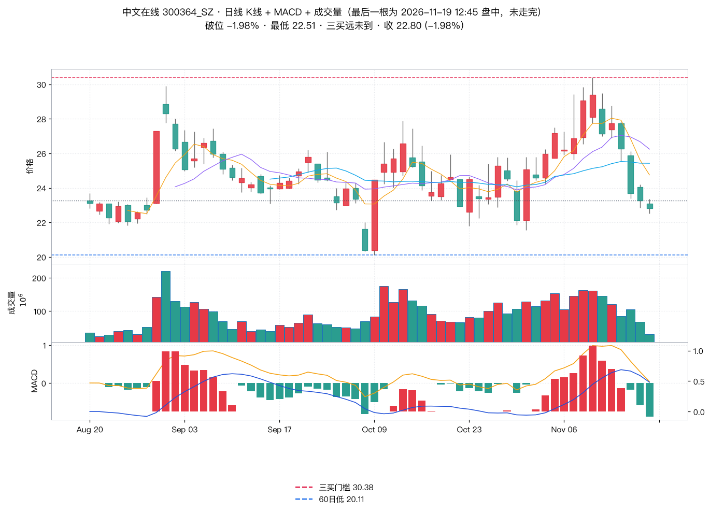
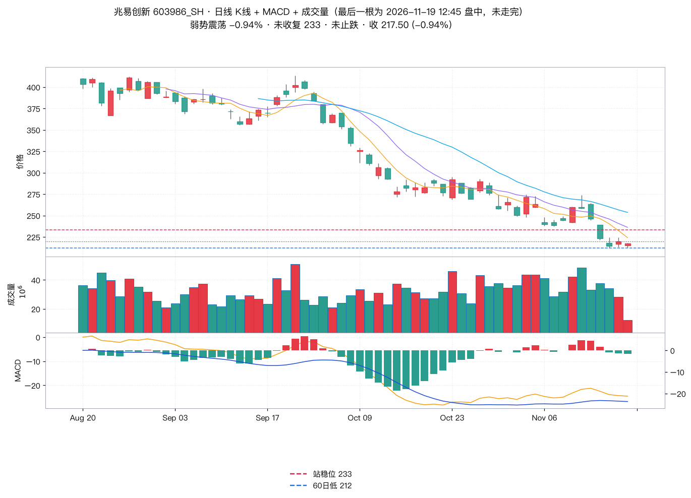
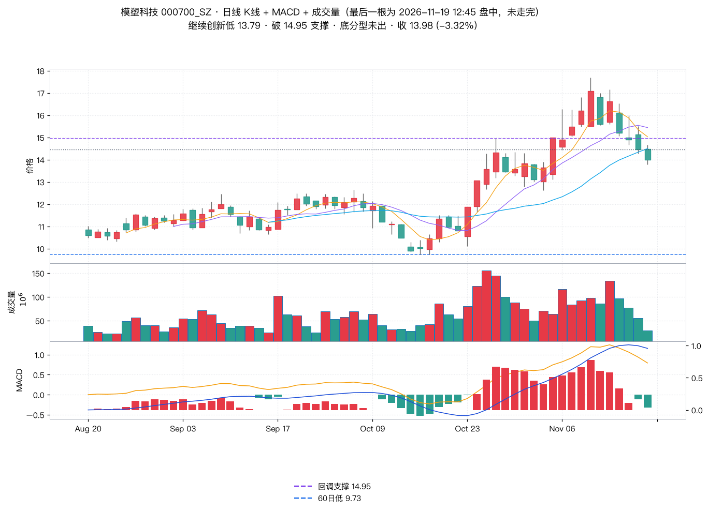
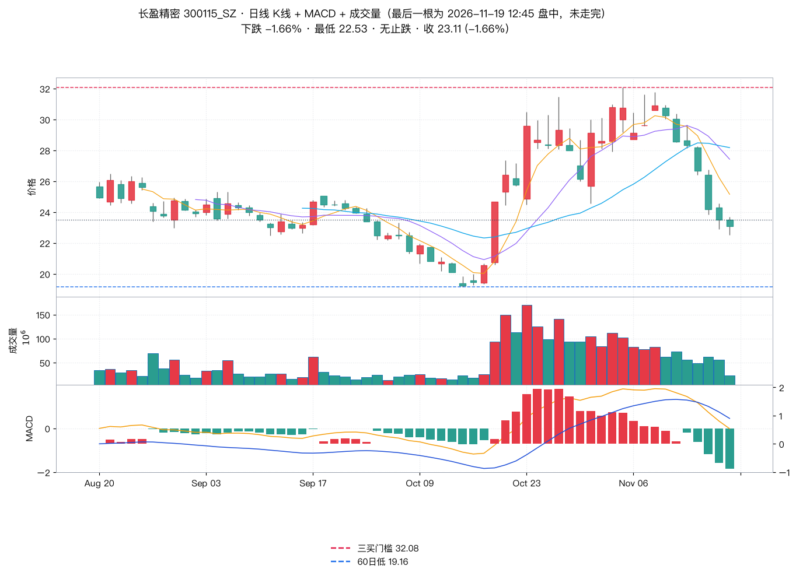
| 老师原文 | 实测 | 判定 |
|---|---|---|
| 老师：「昨日上午高点 3623 点」 | 11/18 上午高点 3596.55，3623 实为 11/16 上午高点 3621.56 | 数值与「昨日」对不上 |
| 老师：「昨日二类热点榜的传媒」 | 11/18 二类热点是国产算力；传媒是 11/16 收评的二类热点 | 指向 11/16 |
| 老师：「明早英伟达业绩」 | FY27Q3 已于 11/17 美股盘后发布（北京时间 11/18 早间），11/19 无「明早」事件 | 事件已过期 |
| 老师：「今天领涨的是半导体」 | 半导体篮子 -1.63%（海光 -13.03% 拖累）；行业榜榜首仅陶瓷 +0.72% | 未领涨 |
| 老师：「无法突破 3263 点」 | 与同段「昨日上午高点 3623」自相矛盾，实测今日最高 3583.12 | 疑为笔误 |
说明：原文「低开探底回升创新低」「传媒走弱」「防御品种温和上扬」「模塑科技今日创新低」「11 只标的无方法买点」在 11/19 上午均成立；但上表 4 条可证伪的事实型判据与 11/19 不符、与 11/17 上午逐条吻合 —— 原文很可能是 11/17 午评的重发。本纪要按 11/19 实测行情出。
来源：都业华《高级班》2026-11-19 午盘（高级班·午盘），执业编号 A0400626100004。仅供参考，不作为买卖依据，据此操作风险自担。投资有风险，入市需谨慎！
口径：同花顺公开接口日线（140 根）+ 12:45 实时快照（最后一根 K 线未走完、成交量为盘中累计）；板块为自建篮子均值（成分逐一列出）；涨跌家数取新浪全 A 5579 只快照；涨停/跌停用东财池；成交额同比取腾讯 5 日分时「同时点 11:30」累计。缠论定性按老师口径引用，不声称我方复算过 15 分钟结构。